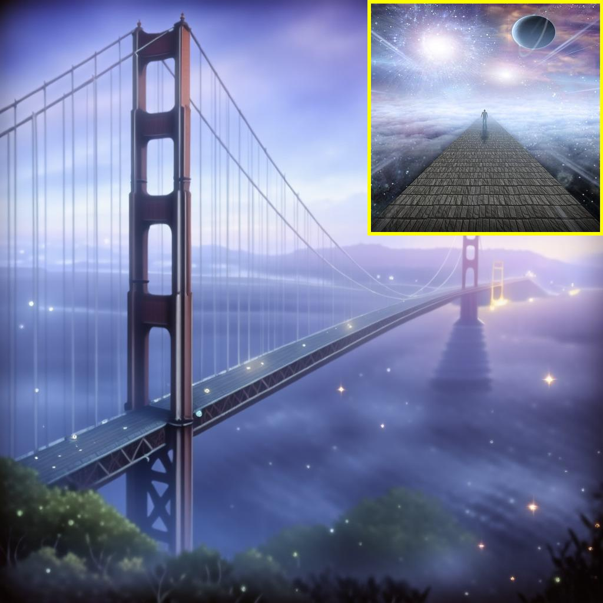
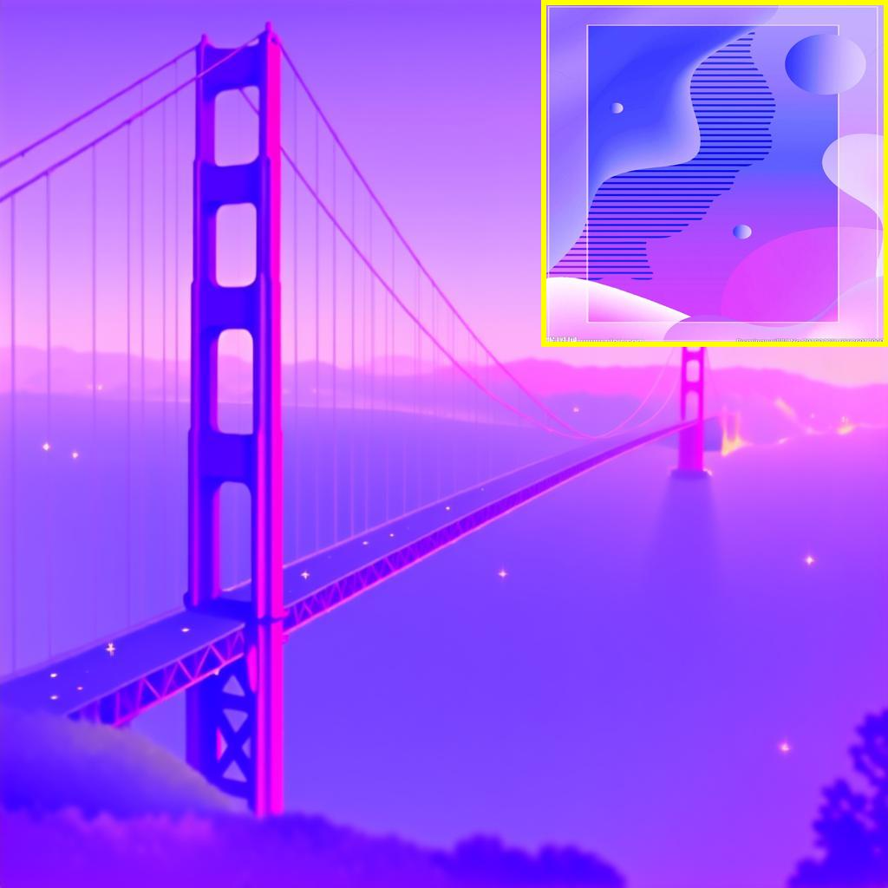

🤖 OmniStyle is the first end-to-end style transfer framework based on the Diffusion Transformer (DiT) architecture, achieving high-quality 1K-resolution stylization by leveraging the large-scale, filtered OmniStyle-1M dataset. It supports both instruction- and image-guided stylization, enabling efficient and versatile style transfer across diverse styles.
🗂️ OmniStyle-1M is the first million-scale paired style transfer dataset, comprising over one million triplets of content, style, and stylized images across 1,000 diverse style categories. It provides strong supervision for learning controllable and generalizable style transfer models.
🧪 OmniStyle-150K is a high-quality subset of OmniStyle-1M, specifically filtered to train the OmniStyle model.

Overview of our dataset creation and filtering pipeline. (a) Content Image Generation: We utilize ChatGPT to automatically generate textual descriptions across 20 categories (e.g., animals, architecture, humans, food) and generate corresponding images using the FLUX model. (b) Style Transfer: Style images are randomly sampled from the Style30K dataset, and six SOTA style transfer models are applied to generate a large and diverse dataset of one million triplets. (c) OmniFilter: Stylized images are filtered based on content consistency, style preservation, and aesthetic appeal to ensure high-quality, visually cohesive results.

Overview of OmniStyle-1M. (a) The inner ring represents the eight primary categories, while the outer ring corresponds to specific fine-grained classifications, illustrating the extensive diversity of style categories within our dataset. (b) Two examples of triplets are shown, each includes a content image, a style image, a stylized output, a corresponding textual description, and an instructional prompt. (c) Distribution of stylized results across different content categories.

The architecture of OmniStyle.
OmniStyle enables high-quality (a) instruction-guided style transfer and (b) reference image-guided style transfer, covering a diverse range of styles, including but not limited to comics, vector art, oil painting, sketch, and Chinese ancient art.
This work was supported in part by the National Natural Science Foundation of China (No. 62202199, 62406134), the Suzhou Key Technologies Project (No. SYG2024136) and the Fundamental Research Funds for the Central Universities.